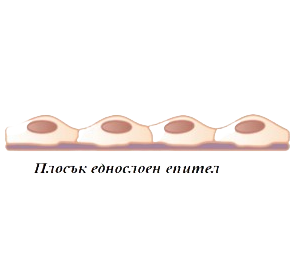
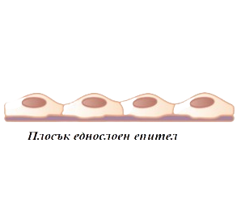
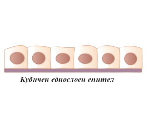
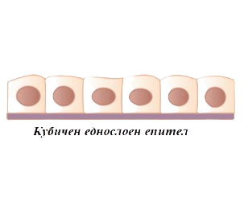

Епителна тъкан
Определение за тъкан
- съвкупност от клетки с общ произход, сходно устройство и функции, заедно с много клетъчно вещество.
Епителна тъкан
A/ Обща характеристика
Епителната тъкан е изградена от плътно допрени клетки с малко количество междуклетъчно вещество.
Тя изпълнява покривна, защитна и секреторна функция. В зависимост от функциите, които изпълнява се разделя на:
покрива външната повърхност на тялото, вътрешната повърхност на кухите органи и
вътрешната повърхност на сърцето и кръвоносните съдове.
Покривният епител може да бъде или еднослоен, или многослоен.
Еднослойният се дели на: плосък, призматичен (цилиндричен) или кубичен (фиг. 1).
Също така има и многослоен, който се дели на вроговяващ (има защитна функция) и невроговяващ (образува лигавици).
-механично-защитна функция,
обмяна на газовете,
всмукване - стената на тънкото черво -защитна - устна кухина, хранопровод, влагалище,
- покрива тялото - епидермис
 

 

- образува жлези с външна, вътрешна и с двойна смесена секреция
- образува и отделя вещества (секрети) или на повърхността на тялото, или в кръвта
- жлезите с двойна секреция рекулират и помагат за извършване на дадени процеси
а/ жлези с вътрешна секреция - хипофизна, щитовидна, околощитовидна, тимус, надбъбречни
б/ жлези с външна секреция - потни, мастнни, млечни, слъзни, храносмилателни (слюнчни, черен дроб)
в/ жлези с двойна (смесена) секреция - задстомашна, полови